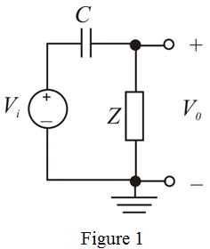

Apply voltage divider rule to the circuit to calculate the output voltage.

Simplify further.
Thus, the transfer function of the high-pass filter is,
.
Refer to Figure 16.18(c) in the textbook for the high-pass circuit.
The impedance of the parallel combination of the resistor and inductor is,
Redraw the circuit as shown in Figure 1.

Apply voltage divider rule to the circuit to calculate the output voltage.
Simplify further.
Thus, the transfer function of the high-pass filter is,
.